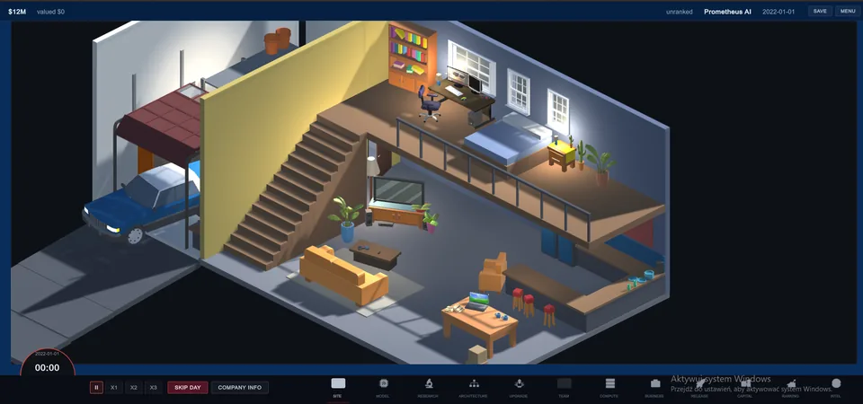
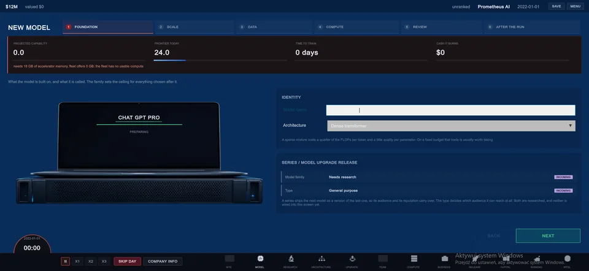

I Turned a Starter House Into the First AI Lab
Why Scaling Laws begins in a small house with one desk, a cheap car and a garage instead of dropping the player into a finished tech campus.
Read build noteSmall technical and visual decisions from the game while they are still fresh: what changed, why it changed and which part is still unfinished.
These first notes are retrospective on work already visible in the current build. Future entries will be added as systems cross a meaningful line.

Why Scaling Laws begins in a small house with one desk, a cheap car and a garage instead of dropping the player into a finished tech campus.
Read build note
Scaling Laws treats AI hardware as a dated asset: it loses value with time, gets hit again by successor generations and can bottleneck on the rest of the server.
Read build note
How Scaling Laws turns parameter count, training tokens and compute-optimal scaling into a readable tycoon decision instead of pretending its capability score is a real benchmark.
Read build noteRSS contains the devlog only. PC Workman's existing blog feeds stay separate.
Open feed.xml